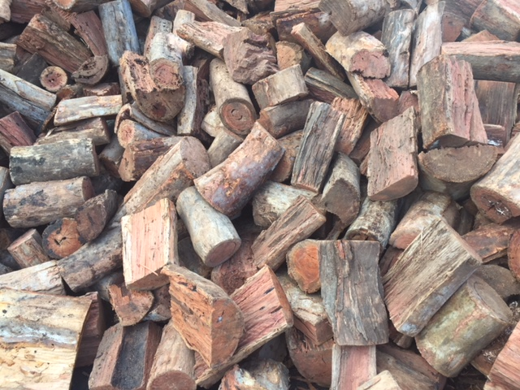
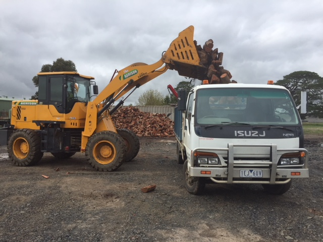

Woodend Firewood

Split and Seasoned Redgum Firewood Supply in Woodend
3 cubic metres is the minimum order, Free Firewood Delivery anywhere in Macedon Ranges and small fee applies elsewhere outside this zone.Nothing quite says Eco-Friendly like recycled firewood from the heartwood of premium saw logs reused.
Our Redgum Firewood has a very low moisture content as most of our wood is aged 5 years and over, this cured Redgum Firewood can deliver combustion up to one third more compared to regular Redgum aged 1-2 years which has a moisture content of around 20% compared to ours which sits at around 10%. Wood this means you can close down your oxygen and the fire won’t go out and will last to the next morning.
At Macedon Ranges Firewood Yard, we offer redgum firewood for domestic as well as commercial clients in Woodend as a sustainable heating solution compared to forestry timber.
Specialist in Providing Redgum Wood

We are amongst the best you can find. We supply Redgum firewood that is completely and ready to burn. We also supply firewood of small and large sizes that are ready to be used for fireplaces and other heating utilities as well. Our unmatched customer service makes us stand apart.Even if you’re running a business that sells or burns wood, we offer a tailored solution to keep you regularly supplied.
Do you prefer firewood over gas or electricity? Many people in Woodend use firewood as their main source of heating it has a better renewable carbon-neutral property over gas and electricity and recycled firewood timber products are more eco-friendly, we have economical recycled firewood for sale at a lower price point and higher BTU output than regular Redgum firewood.
Why Choose Us?
We do our sourcing and supply of Redgum Firewood with the highest BTU or British Thermal Unit. Heartwood from premium saw logs provides exceptional burning qualities with no bark and less sapwood, that’s why recycled firewood products from premium saw logs burns great and even better it is recycled.
How Eco-Friendly is it?
Highly efficient wood-burning heaters means there is low emission of smoke if the wood. When fire burns wood for longer and thoroughly, much of the gas generated during the combustion gets burnt.So, if you’re concerned about the carbon footprint created using your fireplace our firewood is recognized as carbon neutral to the carbon footprint as it does not release any more carbon dioxide than what wood emits during the bio-degradation on the forest floor.
We are ready to take your order and deliver to you as soon as possible. Besides lighting the heart of the home in colder months, we cater to bars, restaurant and shops – where wood-burning fires make the difference all year round. Some of our Redgum that we stock is sawmill off-cuts and sometimes also regular forestry or a mixed blend.
Do call us at 0406600018 and let us know your requirement!
Mixed Hardwoods burn Hot with approximately 5% less heat output than Red Gum Firewood, but is around 25% cheaper to buy.